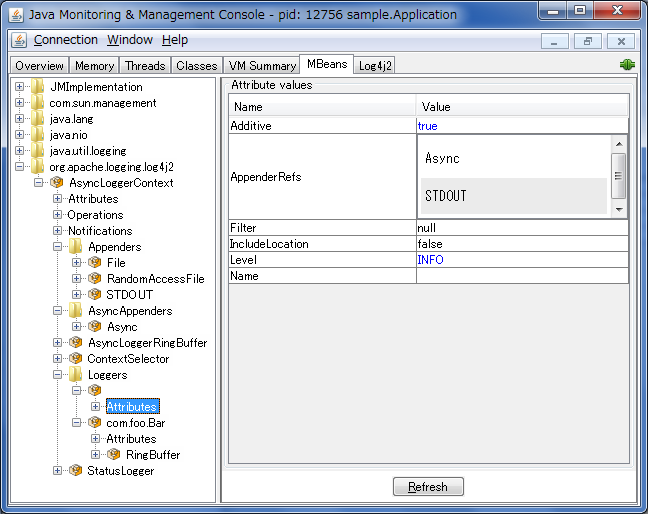

JMX
Log4j 2 has built-in support for JMX. The StatusLogger, ContextSelector, and all LoggerContexts, LoggerConfigs and Appenders are instrumented with MBeans and can be remotely monitored and controlled.
Also included is a simple client GUI that can be used to monitor the StatusLogger output, as well as to remotely reconfigure Log4j with a different configuration file, or to edit the current configuration directly.
Enabling JMX
JMX support is enabled by default. When Log4j initializes, the
StatusLogger, ContextSelector, and all LoggerContexts, LoggerConfigs and
Appenders are instrumented with MBeans. To disable JMX completely, and
prevent these MBeans from being created, specify system property
log4j2.disableJmx to true when you start the Java VM.
Local Monitoring and Management
To perform local monitoring you don’t need to specify any system
properties. The JConsole tool that is included in the Java JDK can be
used to monitor your application. Start JConsole by typing
$JAVA_HOME/bin/jconsole in a command shell. For more details,
see Oracle’s documentation on
how
to use JConsole.
Remote Monitoring and Management
To enable monitoring and management from remote systems, set the following system property when starting the Java VM.
com.sun.management.jmxremote.port=portNum
In the property above, portNum is the port number through which you
want to enable JMX RMI connections.
For more details, see Oracle’s documentation on Remote Monitoring and Management.
RMI impact on Garbage Collection
Be aware that RMI by default triggers a full GC every hour. See the
Oracle
documentation for the sun.rmi.dgc.server.gcInterval and
sun.rmi.dgc.client.gcInterval properties. The default value of both
properties is 3600000 milliseconds (one hour). Before Java 6, it was one
minute.
The two sun.rmi arguments reflect whether your JVM is running in server or client mode. If you want to modify the GC interval time it may be best to specify both properties to ensure the argument is picked up by the JVM.
An alternative may be to disable explicit calls to System.gc()
altogether with -XX:+DisableExplicitGC, or (if you are using the CMS
or G1 collector) add -XX:+ExplicitGCInvokesConcurrent to ensure the
full GCs are done concurrently in parallel with your application instead
of forcing a stop-the-world collection.
Log4j Instrumented Components
The best way to find out which methods and attributes of the various Log4j components are accessible via JMX is to look at the org.apache.logging.log4j.core.jmx package contents in the log4j-core artifact or by exploring directly in JConsole.
The screenshot below shows the Log4j MBeans in JConsole.

Client GUI
The Apache Log4j JMX GUI is a basic client GUI that can be used to monitor the StatusLogger output and to remotely modify the Log4j configuration.
The client GUI can be run as a stand-alone application or as a JConsole plug-in.